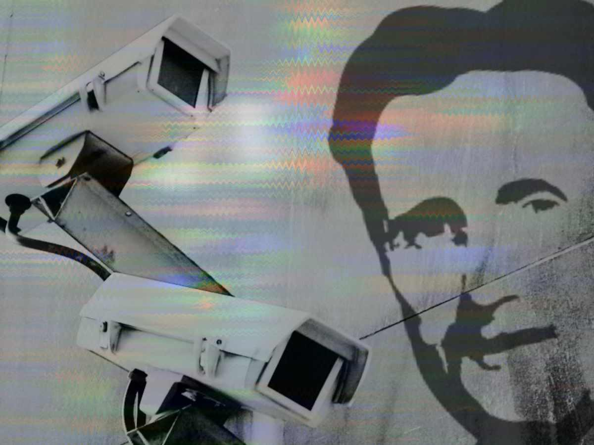
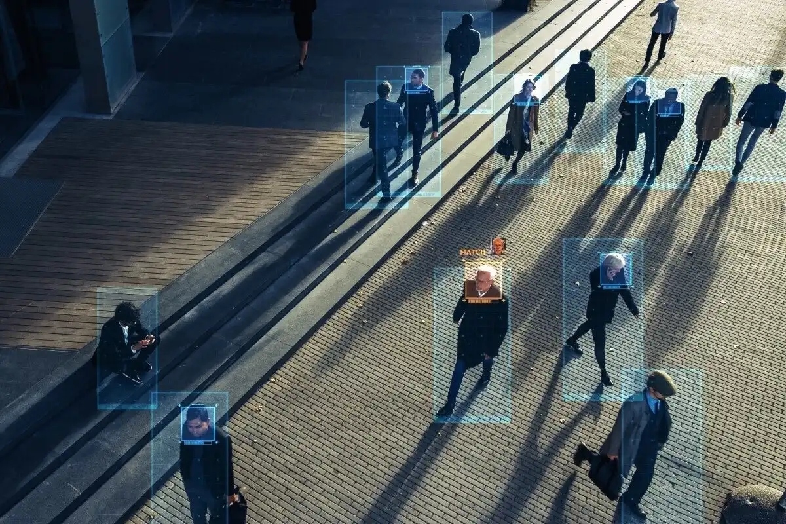

Theme 1 of 5
Surveillance
How has the usage of surveillance on the population of Oceania in 1984 compared to what we see nowadays?
In The Book
What We See In Oceania
- Telescreens are utilized to watch over it's population at all times
- Primary focus is the Outer and Inner Party, not the Proles
- The Thought Police constantly monitor people for any signs of a mutiny
- The Junior Spies will report and snitch on those who they observe to be doing something illegal
- Hidden microphones are hidden in order to secretly listen in to private conversations
Quote
“The telescreen received and transmitted simultaneously. Any sound that Winston made, above the level of a very low whisper, would be picked up by it, moreover, so long as he remained within the field of vision which the metal plaque commanded, he could be seen as well as heard. There was of course no way of knowing whether you were being watched at any given moment.”
(pg 3)
Real Life
Modern Example
- CCTV/Security cameras are placed everywhere
- Government programs such as the NSA perform surveillance on the population
- Smart home devices are always listening, and can be used against you
- The GPS in all phones can keep track of where every single American is at all times
